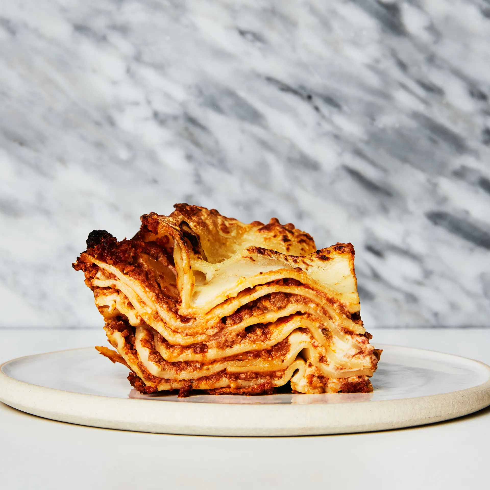

Lasagna

Description
This recipe will let you make the moust mouthwatering lasagna you've ever tasted!
Ingredients
Ragu Bolognese
- 2 lb. Ground Pork
- 1 lb. Ground Beef Chuck (20% fat)
- Kosher Salt
- Freshly ground black pepper
- 2 Tbsp. extra virgin olive oil
- 2 oz. Pancetta
- 1 medium onion, finely chopped
- 1 celery stalk, finely chopped
- 1 Medium carrot, finely chopped
- 6 garlic cloves, sliced
- 2 Tbsp. tomato paste
- 3/4 cup of dry white wine
- 1 28 oz. can whole peeled tomatoes
- 1 cup low-sodium chicken broth
- 1 cup whole milk
Beschamel
- 7 tbsp. unsalted butter
- 1/4 cup plus 3 tbsp. all-purpose flour
- 6 cups whole milk
- 4oz. parmesan, coarsely grated (about a cup)
- Pinch of cayenne pepper
- Pinch of ground nutmeg
- Kosher salt and freshly ground black pepper (to taste)
Assembly
- 1 1/4 lb. dried lasagna noodles
- Kosher Salt
- Extra virgin olive oil
Cooking Instructions
Ragu Bolognese
- Preheat oven to 225°. Mix pork and beef with your hands in a large bowl; season generously with salt and pepper, then mix again. Form into about 18 large meatballs (they do not need to be perfect—you will be mashing them later).
- Heat oil in a large Dutch oven over medium-high. Working in 2 batches, cook meatballs, turning occasionally and reducing heat if bottom of pot looks in danger of scorching, until browned all over, about 6 minutes per batch. Transfer to a rimmed baking sheet as finished.
- Reduce heat to medium. Add pancetta and cook, stirring often, until lightly browned and beginning to crisp, about 5 minutes. Add onion, celery, carrot, and garlic and cook, stirring occasionally, until softened, 6–8 minutes. Add tomato paste and cook, stirring constantly, until paste darkens, about 2 minutes. Add wine and cook, stirring occasionally, until nearly completely evaporated, 4–5 minutes. Add tomatoes, crushing with your hands, and increase heat to medium-high. Cook, stirring occasionally, until liquid is jammy and reduced by about half, 8–10 minutes. Add broth and milk and return meat to pot. Bring to a simmer. Cover pot, leaving lid slightly ajar, and transfer to oven. Bake sauce (no need to stir, but check after 1 to 2 hours to ensure liquid is at a low simmer, adjusting oven temperature as needed) until meatballs are falling-apart tender, 3 to 4 hours.
- Using a potato masher, break meatballs apart and incorporate into liquid (you should have about 8 cups ragù); season with salt and pepper. Reduce over medium-low heat if needed to thicken.
DO AHEAD: Sauce can be made ahead of time. Cover in the refrigerator and store up to 4 days, or freeze and store for up to months
Beschamel
- Melt butter in a large saucepan over medium heat. Whisk in flour and cook, whisking occasionally, until flour begins to smell a bit nutty, about 4 minutes. Quickly whisk in milk and increase heat to medium-high. Bring to a simmer and cook, whisking occasionally, until béchamel thickens, about 4 minutes. Reduce heat to medium-low and cook, whisking occasionally, until smooth and velvety, about 10 minutes. Remove from heat and whisk in Parmesan, cayenne, and nutmeg (you should have about 6 cups); season with salt and pepper. Transfer to a large bowl, cover with plastic wrap, and use within 1 hour or chill.
DO AHEAD:The beschamel can be made a day ahead of time. Store covered in the refrigerator
Assembly
- Preheat oven to 325°. Cook noodles in a large pot of boiling salted water, stirring occasionally and separating noodles so they don’t stick to each other, until just starting to soften but still snap in half rather than bend when folded; 3 minutes is the magic number. They will be so firm it will just seem all wrong, but this is what separates al dente lasagna layers from gummy ones. Transfer noodles to a large bowl of cold water to cool. Drain and lie flat in a single layer on a rimmed baking sheet, separated by parchment or wax paper.
- Lightly oil a 13x9" glass or ceramic baking dish. Spread 1½ cups ragù in dish. Lay a single layer of noodles over ragù (you will need to cut some noodles in half in order to fill all gaps). Spoon 1¼ cups béchamel over noodles, spreading in an even layer with a small offset spatula. Top béchamel with 1½ cups ragù. Repeat, creating 5 layers of pasta (or 6, depending on how deep your pan is) and ending with remaining 1 cup béchamel. It should come right to the top edge of the dish, and the top layer of pasta will get super crunchy when baked.
- Cover with a lightly oiled piece of foil and set on a rimmed baking sheet (just to catch drips). Bake lasagna until bubbling gently around the edges, about 1 hour. Remove from oven and increase oven temperature to 425°; carefully place rack in top of oven. Uncover and continue to bake until top is browned and crisp around the edges, 10–15 minutes.
- Let sit 10 minutes before serving.
DO AHEAD: Unbaked lasagna can be assembled 1 month ahead. Let cool, then cover with plastic and freeze. Let thaw overnight in fridge, then bake as directed.